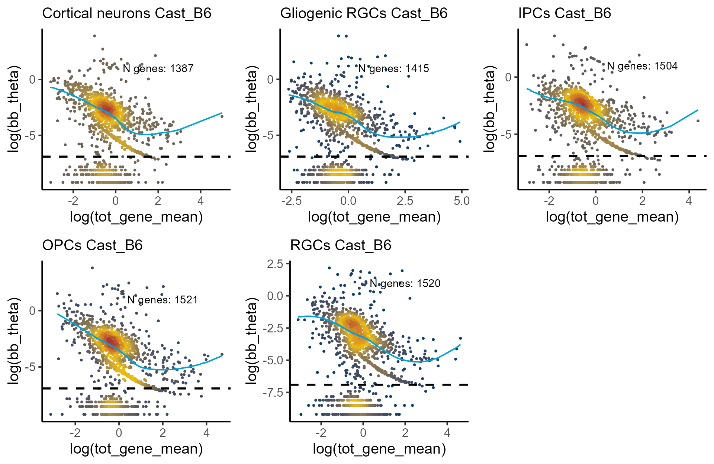
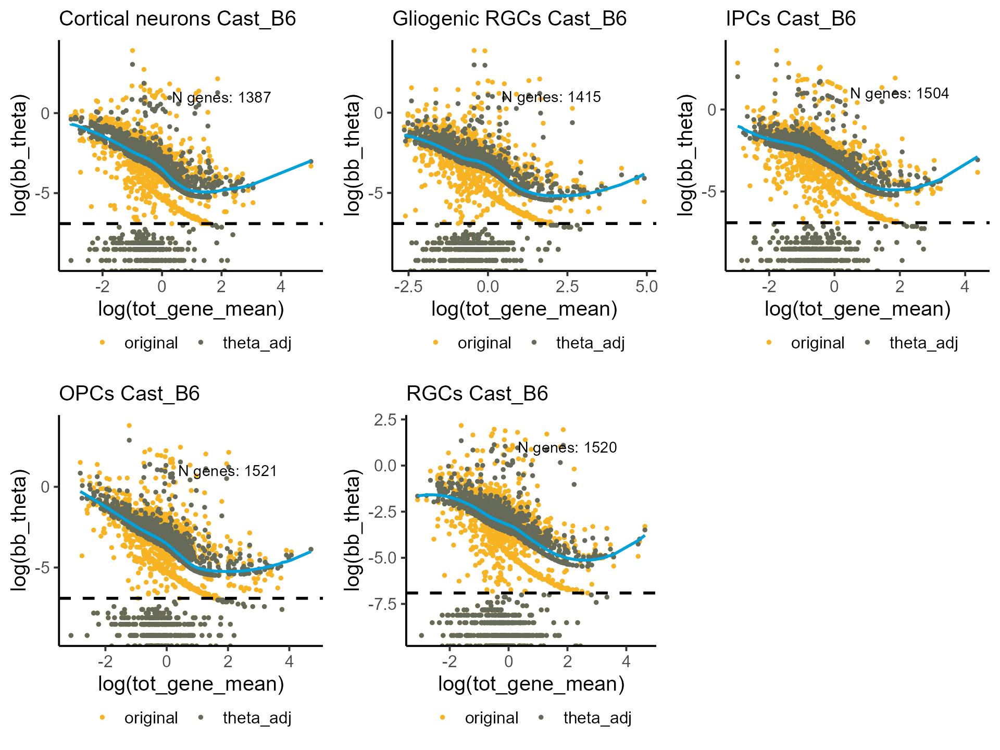
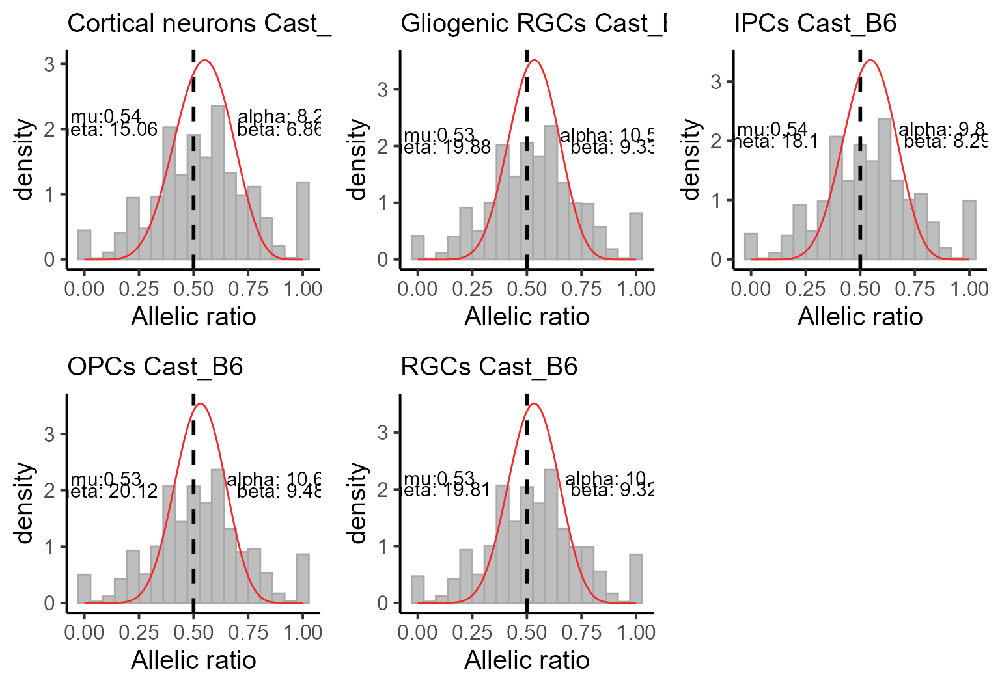
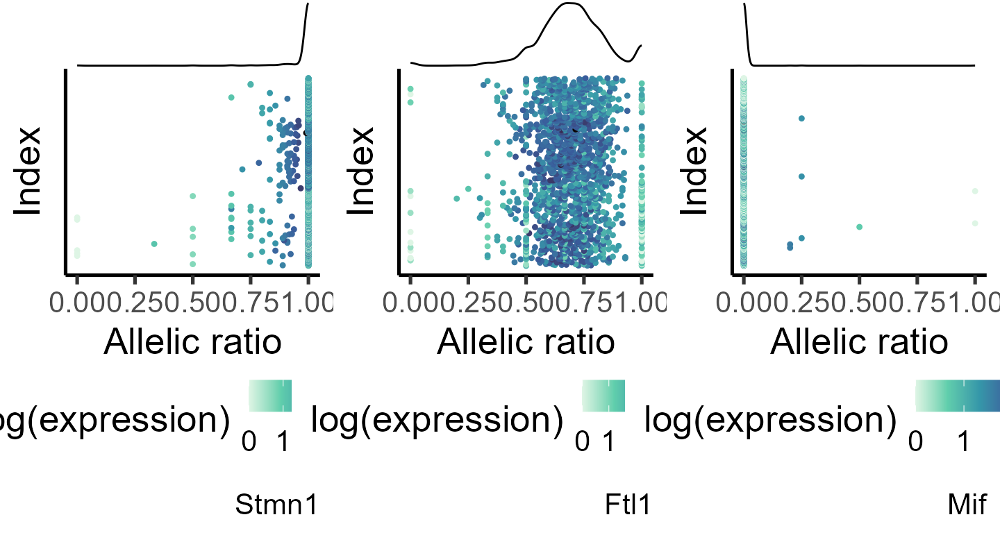
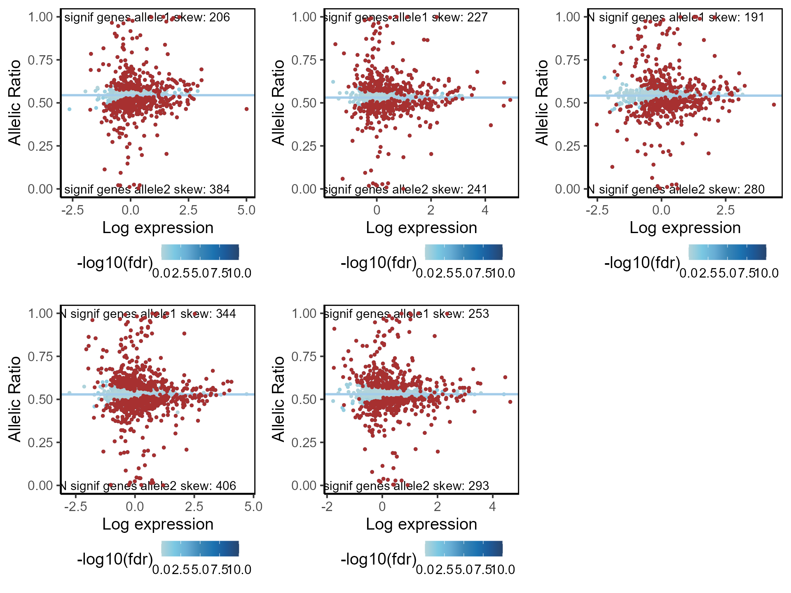

allelic_imbalance
allelic_imbalance.RmdAllelic imbalance test
Introduction
ASPEN represents a comprehensive statistical framework that is designed to evaluate patterns in allele-specific expression (ASE). ASPEN uses beta-binomial distribution to model allelic ratio, a fraction of reads from a reference allele to the total number of reads mapped to a gene. Allelic ratio is restricted to interval and their distribution can be described with beta-binomial mean, , and dispersion, .\
scRNA counts, like any sequencing counts, suffer from the mean-variance bias - we observe greater variability in low-expressed genes than in high-expressed genes. ASPEN mitigates that bias by modeling allelic dispersion, , as a function of gene expression and uses hierarchial Bayes model to shrink the original dispersion estimates towards the common trend, which represents the level of dispersion expected for genes with similar expression.\
ASPEN input are the reference allele counts and the total counts (a sum of counts from both alleles) matrices. The main steps in the workflow as follows:Setup
#loading required libraries
library(ASPEN)
#> Loading required package: doParallel
#> Loading required package: foreach
#> Loading required package: iterators
#> Loading required package: parallel
#> Loading required package: locfit
#> locfit 1.5-9.9 2024-03-01
#> Loading required package: ggplot2
#> Loading required package: ggthemes
#> Loading required package: ggsci
#> Loading required package: ggpointdensity
#> Loading required package: ggExtra
#> Loading required package: ggrepel
#> Loading required package: ggpubr
#> Loading required package: assertthat
#> Loading required package: zoo
#>
#> Attaching package: 'zoo'
#> The following objects are masked from 'package:base':
#>
#> as.Date, as.Date.numeric
#> Loading required package: dplyr
#>
#> Attaching package: 'dplyr'
#> The following objects are masked from 'package:stats':
#>
#> filter, lag
#> The following objects are masked from 'package:base':
#>
#> intersect, setdiff, setequal, union
#> Loading required package: data.table
#>
#> Attaching package: 'data.table'
#> The following objects are masked from 'package:dplyr':
#>
#> between, first, last
#> The following objects are masked from 'package:zoo':
#>
#> yearmon, yearqtr
#> Loading required package: VGAM
#> Loading required package: stats4
#> Loading required package: splines
library(gridExtra)
#>
#> Attaching package: 'gridExtra'
#> The following object is masked from 'package:dplyr':
#>
#> combine
library(openxlsx)Loading allele-specifc count data
Here we use mouse brain organoids data from CastB6 hybrids. We load the reference allele counts (B6 counts) and the total counts (a sum of counts from both alleles). The cells were previously annotated based on the marker genes expression. There are five cell types: neurogenic progenitor cells (also, radial glial cells (RGCs)), intermediate progenitors cells (IPCs), deep layer neurons (cortical neurons), gliogenic progenitor cells (gliogenic RGCs) and olygodendrocyte precursor cells (OPCs).
data("Cast_B6_a1")
data("Cast_B6_tot")
load_file <- system.file("extdata", "Cast_B6_cell_annot.xlsx", package = "ASPEN")
cell_annot <- read.xlsx(load_file, rowNames = T)
head(cell_annot)
#> cell_barcode background cell_type clone_number
#> 4 AAACCCACAGCAGATG cast_b6 Gliogenic progenitor cells 3rd_clone
#> 8 AAACCCATCAGAGCGA cast_b6 Gliogenic progenitor cells 3rd_clone
#> 16 AAACGAAGTAGTTAGA cast_b6 Neurogenic progenitor cells 3rd_clone
#> 19 AAACGAAGTGTTATCG cast_b6 Intermediate neuronal progenitors 3rd_clone
#> 22 AAACGAATCTCGTCAC cast_b6 Deep layer neurons 3rd_clone
#> 41 AAAGGATGTATGCTTG cast_b6 Intermediate neuronal progenitors 3rd_clone
#> cell_idents
#> 4 Gliogenic RGCs
#> 8 Gliogenic RGCs
#> 16 RGCs
#> 19 IPCs
#> 22 Cortical neurons
#> 41 IPCs
table(cell_annot$cell_idents)
#>
#> Cortical neurons Gliogenic RGCs IPCs OPCs
#> 1615 1157 1274 1523
#> RGCs
#> 935Data pre-processing
Analysis of allelic imblanace will be done in each cell type separately. First, we split the metadata object by cell types.
#splitting the metadata by cell type
cell_list <- split(cell_annot, f = cell_annot$cell_idents)
a1_mat <- lapply(cell_list, function(q) Cast_B6_a1[,gsub(".*_", "", colnames(Cast_B6_a1)) %in% q$cell_barcode])
tot_mat <- lapply(cell_list, function(q) Cast_B6_tot[,gsub(".*_", "", colnames(Cast_B6_tot)) %in% q$cell_barcode])Checking that reference and total count matrices are the same size.
mapply(function(p, q) dim(p) == dim(q), a1_mat, tot_mat, SIMPLIFY = F)
#> $`Cortical neurons`
#> [1] TRUE TRUE
#>
#> $`Gliogenic RGCs`
#> [1] TRUE TRUE
#>
#> $IPCs
#> [1] TRUE TRUE
#>
#> $OPCs
#> [1] TRUE TRUE
#>
#> $RGCs
#> [1] TRUE TRUEChecking that the gene order is the same between the reference and total count matrices.
mapply(function(p, q) table(rownames(p) == rownames(q)), a1_mat, tot_mat, SIMPLIFY = F)
#> $`Cortical neurons`
#>
#> TRUE
#> 1551
#>
#> $`Gliogenic RGCs`
#>
#> TRUE
#> 1551
#>
#> $IPCs
#>
#> TRUE
#> 1551
#>
#> $OPCs
#>
#> TRUE
#> 1551
#>
#> $RGCs
#>
#> TRUE
#> 1551Remove low-expressed genes that have counts in less than 10 cells
Estimating beta-binomial parameters
bb_init_params <- mapply(function(p, q) estim_bbparams(p, q, min_cells = 5, cores = 6), a1_mat, tot_mat, SIMPLIFY = F)
head(bb_init_params[[1]])
#> N AR tot_gene_mean tot_gene_variance alpha
#> Stmn1 850 0.984148582 5.9328689 29.297138 1.752689e+02
#> Uchl1 1055 0.998929294 8.2020266 45.383114 1.735938e+05
#> Hmgb1 37 0.976436130 1.0880304 1.781219 1.458176e+01
#> Gm9794 25 0.011239671 0.9550348 1.544872 8.007730e-01
#> Ftl1 1432 0.694541696 21.2995567 322.520475 1.867524e+02
#> Mif 94 0.003891258 1.4046865 3.597215 8.830451e+00
#> beta bb_mu bb_theta id
#> Stmn1 2.4149423 0.9864 0.0056 1
#> Uchl1 134.0358378 0.9992 0.0000 2
#> Hmgb1 0.3430136 0.9770 0.0670 3
#> Gm9794 63.9134233 0.0124 0.0155 4
#> Ftl1 85.9937477 0.6847 0.0037 5
#> Mif 2439.8454192 0.0036 0.0004 6Estimate appropriate shrinkage parameters
We estimate shrinkage parameters on each cell type separately
Performing Bayesian shrinkage
bb_init_params <- lapply(bb_init_params, function(q) q[!is.na(q$bb_theta),])
shrunk_estims_vardelta <- mapply(function(p, q) correct_theta(p, N_set = q[1], delta_set = q[2], thetaFilter = 0.001),
bb_init_params, shrink_pars, SIMPLIFY = F)
head(shrunk_estims_vardelta[[1]])
#> N AR tot_gene_mean tot_gene_variance alpha
#> Stmn1 850 0.984148582 5.9328689 29.297138 1.752689e+02
#> Uchl1 1055 0.998929294 8.2020266 45.383114 1.735938e+05
#> Hmgb1 37 0.976436130 1.0880304 1.781219 1.458176e+01
#> Gm9794 25 0.011239671 0.9550348 1.544872 8.007730e-01
#> Ftl1 1432 0.694541696 21.2995567 322.520475 1.867524e+02
#> Mif 94 0.003891258 1.4046865 3.597215 8.830451e+00
#> beta bb_mu bb_theta id theta_smoothed ci_upper ci_lower
#> Stmn1 2.4149423 0.9864 0.0056 1 0.007485426 0.1367155 -0.12174465
#> Uchl1 134.0358378 0.9992 0.0000 2 NA NA NA
#> Hmgb1 0.3430136 0.9770 0.0670 3 0.025846831 0.1106315 -0.05893784
#> Gm9794 63.9134233 0.0124 0.0155 4 0.032507547 0.1152797 -0.05026461
#> Ftl1 85.9937477 0.6847 0.0037 5 0.011745445 0.3276667 -0.30417583
#> Mif 2439.8454192 0.0036 0.0004 6 NA NA NA
#> thetaCorrected alphaCorrected betaCorrected alphaSmoothed betaSmoothed
#> Stmn1 0.007318549 1.347808e+02 1.8582919 131.7760754 1.8168640
#> Uchl1 0.000000000 1.735938e+05 134.0358378 NA NA
#> Hmgb1 0.045258514 2.158710e+01 0.5081917 37.7996053 0.8898576
#> Gm9794 0.028084312 4.415276e-01 35.1655400 0.3814499 30.3806375
#> Ftl1 0.009350336 7.322732e+01 33.7207138 58.2949384 26.8444488
#> Mif 0.000400000 8.830451e+00 2439.8454192 NA NA
#> theta_common ci_upper2 ci_lower2
#> Stmn1 0.007485426 0.1367155 -0.12174465
#> Uchl1 0.008250289 0.1712196 -0.15471906
#> Hmgb1 0.025846831 0.1106315 -0.05893784
#> Gm9794 0.032507547 0.1152797 -0.05026461
#> Ftl1 0.011745445 0.3276667 -0.30417583
#> Mif 0.015817638 0.1062152 -0.07457996Visualizing model fit. The population of genes with extremely low dispersion levels forms a separate cluster. We estimate that those genes have and those genes are excluded from the shrinkage procedure by setting parameter thetaFilter = 0.001 in the correct_theta command.
celltypes <- list("Cortical neurons", "Gliogenic RGCs", "IPCs", "OPCs", "RGCs")
p_disp <- mapply(function(p,q) plot_disp_fit_theta(p, midpoint = 100) +
labs(subtitle = paste0(q, " Cast_B6")) + geom_hline(yintercept = log(1e-03), linetype = "dashed", linewidth = 1),
shrunk_estims_vardelta, celltypes, SIMPLIFY = F)
do.call(grid.arrange, c(p_disp, ncol = 3))
#> Warning: Removed 39 rows containing non-finite outside the scale range
#> (`stat_pointdensity()`).
#> Warning: Removed 71 rows containing non-finite outside the scale range
#> (`stat_pointdensity()`).
#> Warning: Removed 74 rows containing non-finite outside the scale range
#> (`stat_pointdensity()`).
#> Warning: Removed 54 rows containing non-finite outside the scale range
#> (`stat_pointdensity()`).
#> Warning: Removed 1 row containing missing values or values outside the scale range
#> (`geom_line()`).
#> Warning: Removed 84 rows containing non-finite outside the scale range
#> (`stat_pointdensity()`).
Visualizing original and shrunk .
p_disp <- mapply(function(p,q) plot_disp(p) +
labs(subtitle = paste0(q, " Cast_B6")) +
geom_hline(yintercept = log(1e-03), linetype = "dashed", linewidth = 1),
shrunk_estims_vardelta, celltypes, SIMPLIFY = F)
do.call(grid.arrange, c(p_disp, ncol = 3))
#> Warning: Removed 1 row containing missing values or values outside the scale range
#> (`geom_line()`). Alternatively, we can set and parameters manually.
shrunk_estims <- lapply(bb_init_params, function(q) correct_theta(q, delta_set = 50, N_set = 30, thetaFilter = 0.001))
p_disp <- mapply(function(p,q) plot_disp(p) +
labs(subtitle = paste0(q, " Cast_B6")) +
geom_hline(yintercept = log(1e-03), linetype = "dashed", linewidth = 1),
shrunk_estims, celltypes, SIMPLIFY = F)
do.call(grid.arrange, c(p_disp, ncol = 3))
#> Warning: Removed 1 row containing missing values or values outside the scale range
#> (`geom_line()`). ### Estimating global beta-binomial parameters
### Estimating global beta-binomial parameters
Evaluating global beta-binomial parameters helps to assess a degree of bias towards the reference allele. This is done by estimating beta-binomial distribution parameters on all genes, excluding those on sex chromosomes and the imprinted genes. For the GRCm38 (mm10) mouse genome, the list of genes on X and Y chromosomes and some validated imprinted genes are included with the package. These genes are specified through genes.excl parameter in glob_disp function.
load_file <- system.file("extdata", "mm10_genesXY.txt", package = "ASPEN")
genesXY <- read.table(load_file)
load_file <- system.file("extdata", "mm10_imprinted_genes.xlsx", package = "ASPEN")
genesIMPR <- read.xlsx(load_file, colNames = T)
genes2remove <- c(genesXY$V1, genesIMPR$imprinted.genes)
global_estims <- mapply(function(p, q) glob_disp(p, q, genes.excl = genes2remove, min_counts = 5),
a1_mat, tot_mat, SIMPLIFY = F)
global_estims
#> $`Cortical neurons`
#> mu theta alpha beta
#> 0.5445001 15.0586614 8.1994433 6.8592218
#>
#> $`Gliogenic RGCs`
#> mu theta alpha beta
#> 0.5307348 19.8779514 10.5499393 9.3280478
#>
#> $IPCs
#> mu theta alpha beta
#> 0.541977 18.096688 9.808002 8.288720
#>
#> $OPCs
#> mu theta alpha beta
#> 0.528725 20.121835 10.638866 9.482886
#>
#> $RGCs
#> mu theta alpha beta
#> 0.5298265 19.8136680 10.4979006 9.3159135Visualizing global allelic ratio distribution across all genes. Deviation from the balanced allelic expression () indicates a presence of a skew towards the reference allele. If reference allele bias is identified, the null hypothesis for the allelic imbalance testing will be adjusted accordingly. For analysis of CastB6 hybrids, instead of using , the null hypotheses will be adjusted to for Cortical neurons and IPCs datasets and to for Gliogenic RGCs, OPCs and RGCs.
p_glob <- mapply(function(p,q,r,s) plot_glob_params(p, q, r, min_counts = 5) +
labs(subtitle = paste0(s, " Cast_B6")),
a1_mat, tot_mat, global_estims, celltypes, SIMPLIFY = F)
#> Loading required package: reshape2
#>
#> Attaching package: 'reshape2'
#> The following objects are masked from 'package:data.table':
#>
#> dcast, melt
do.call(grid.arrange, c(p_glob, ncol = 3))
Allelic imbalance test
Running beta_binom_test function to identify genes with allelic ratio deviating from the null hypothesis.
bb_test_res <- mapply(function(p, q, r, s) beta_binom_test(p, q, r, min_cells = 5, glob_params = s),
a1_mat, tot_mat, shrunk_estims, global_estims, SIMPLIFY = F)\
For genes in which the quality cut-off threshold (here we used a minimum of five cells with at least of five mapped reads) was not met, the inference is not performed, Those genes have NA values in the fields specified above. We remove those genes and calculate fdr’s.
bb_test_res <- lapply(bb_test_res, function(q) q <- q[!is.na(q$pval_mean),])
#calculating fdr
bb_test_res <- lapply(bb_test_res, function(q) {q$fdr_mean <- p.adjust(q$pval_mean, method = "fdr");
q$fdr_disp <- p.adjust(q$pval_disp, method = "fdr");
q <- q[order(q$fdr_mean),];
return(q)})Top genes with significant allelic imbalance based on fdr
lapply(bb_test_res, function(q) q[1:10, c("AR", "fdr_mean")])
#> $`Cortical neurons`
#> AR fdr_mean
#> Stmn1 0.984148582 0
#> Uchl1 0.998929294 0
#> Hmgb1 0.976436130 0
#> Gm9794 0.011239671 0
#> Ftl1 0.694541696 0
#> Mif 0.003891258 0
#> Rps15 0.837685781 0
#> Rps24 0.203409667 0
#> Sec61g 0.024583584 0
#> Eif4a1 0.998208469 0
#>
#> $`Gliogenic RGCs`
#> AR fdr_mean
#> Stmn1 0.995680152 0
#> Uchl1 0.999465812 0
#> Gm9794 0.008240608 0
#> Ftl1 0.680179015 0
#> Rps15 0.864514339 0
#> Rps24 0.202708166 0
#> Sec61g 0.032801669 0
#> Rpl35a 0.999114844 0
#> Ubb 0.998771109 0
#> Mrps33 0.027648076 0
#>
#> $IPCs
#> AR fdr_mean
#> Stmn1 0.988831009 0
#> Uchl1 0.999651163 0
#> Gm9794 0.011096375 0
#> Mif 0.002981515 0
#> Rps15 0.865044891 0
#> Rps24 0.206429375 0
#> Sec61g 0.024171380 0
#> Eif4a1 0.998726346 0
#> Hnrnpa1 0.026154401 0
#> Rpl35a 0.996655475 0
#>
#> $OPCs
#> AR fdr_mean
#> Stmn1 0.990471159 0
#> Uchl1 0.999502700 0
#> Hmgb1 0.947855448 0
#> Gm9794 0.013659644 0
#> Ftl1 0.665984639 0
#> Mif 0.002498002 0
#> Rps15 0.882669209 0
#> Rps24 0.207723347 0
#> Sec61g 0.029949202 0
#> Eif4a1 0.999097098 0
#>
#> $RGCs
#> AR fdr_mean
#> Stmn1 0.991590207 0
#> Uchl1 0.998704663 0
#> Hmgb1 0.950060226 0
#> Gm9794 0.004747001 0
#> Ftl1 0.675717150 0
#> Mif 0.004378284 0
#> Rps15 0.867951462 0
#> Rps24 0.196448413 0
#> Sec61g 0.028287041 0
#> Eif4a1 0.998527246 0Visualizing allelic distribution of some of the top genes. We’re using all cells for the plots below and they’re coloured by log(mean expression).
#specifiying genes for plotting
genes_select <- list("Stmn1", "Ftl1", "Mif")
#generating data frame for plotting
plot_data <- lapply(genes_select, function(q) makedf(a1_mat[[1]], tot_mat[[1]], gene = q))
p_ar_dist <- mapply(function(p,q,r) plot_distr(p, gene = q),
plot_data, genes_select, SIMPLIFY = F)
do.call(grid.arrange, c(p_ar_dist, ncol = 3))
To assess the overall test results, we can plot allelic ratio over the log (mean expression). This plot has a similar concept to an MA plot - instead of the log2 fold changes, we plot allelic ratio on the y-axis. The plot is centered around the global allelic mean, which was used as in the test, and as we previously identified, for all cell types in CastB6 hybrids dataset it deviates from . Genes with significant deviation from the balanced expression (by default defined as and ) are indicated in red. Number of such genes biased to either of the alleles is also shown.
MA_plot <- mapply(function(p,q) plot_MA(p, fdr_var = FALSE, fdr_cutoff = 0.05, min_logFC = 1, q),
bb_test_res, global_estims, SIMPLIFY = F)
do.call(grid.arrange, c(MA_plot, ncol = 3))